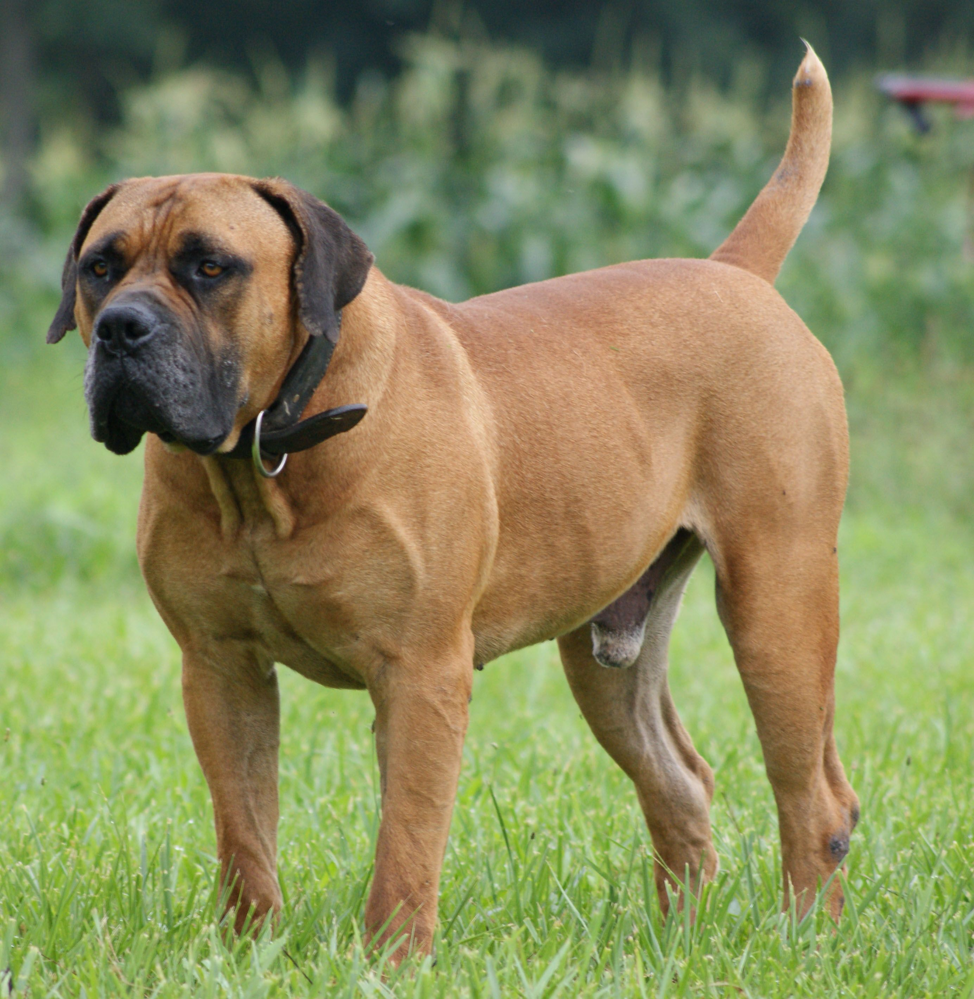

Cougar/Mountain Lion
Animal

- Scientific Name: Puma concolor
- Lifespan: 8 - 13 years
- Natural Habitat: Mountain areas
- Best Food: Deer
Brief Info: This powerful predator roams the animracas, where it is also called panther, puma, catamount or mountain lion. Cougars like to prey on Deer, though they also eat smaller animals such as coyotes, and raccoons. They usually hunt at night or during gloaming hours of dawn or dusk.
Cougars are mostly related to domestic cats than they are to other "larger cats" of the world (i.e Tigers, Lions and Jaguars), as they cannot roar and often communicate with chirps, hisses and growls.